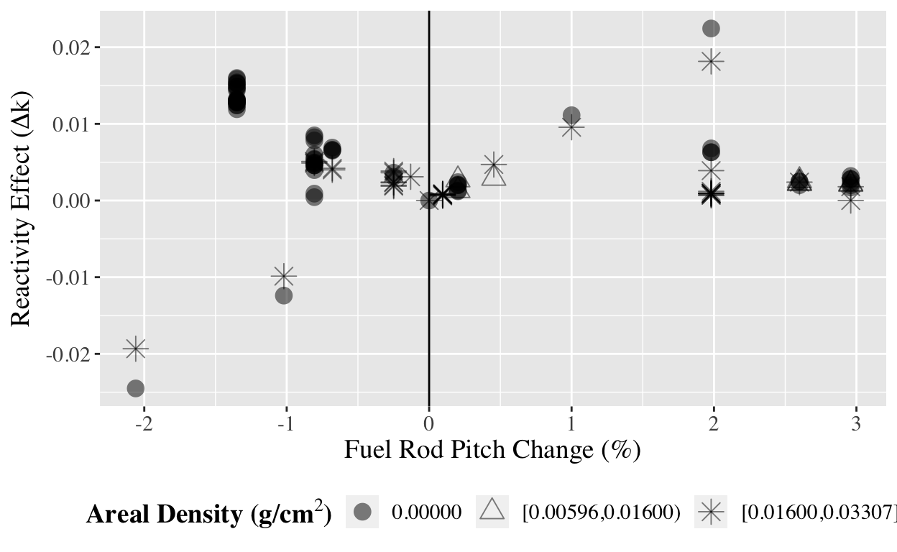

Commercial nuclear power plant (NPP) operating strategies, spent fuel pool (SFP) management practices, and nuclear fuel design have evolved to a point where it is common for SFP nuclear criticality safety (NCS) analyses to show little remaining margin to regulatory limits for subcriticality. As a result, ensuring that all significant sources of uncertainty or bias are properly considered and accounted for in the NCS analyses has taken on increased significance. A large amount of SFP NCS analysis work has been performed in recent years that includes investigation of a broad variety of SFP storage configurations and possible reactivity sensitivities that could result in erosion of existing subcriticality margins. Due to ongoing efforts to develop detailed guidance for performing SFP NCS analyses that will be used by commercial NPP licensees, NRC staff has been performing a review of documents submitted to the NRC with uncertainty and sensitivity related information, including approved license amendment requests and publicly available studies. This paper presents some of the resulting findings and recommendations for future study.
In order to demonstrate that they meet the NRC’s subcriticality requirements, licensees must submit analyses that demonstrate that the limit on SFP k-effective is satisfied at the upper 95/95 statistical threshold. Historically, many licensees submitted simple analyses that either treated parameters affecting SFP criticality in a bounding manner, or had significant margin to the limit to cover any unevaluated uncertainties. In recent years, many power plant operators have been submitting SFP NCS analyses that show little remaining margin to the regulatory limit. This is generally because of a number of recent evolutions in SFP and plant operations, such as re-racking for higher density SFP storage, increased cycle energy requirements that result in storage of higher reactivity fuel, or degradation of neutron-absorbing materials (NAM). Therefore, the individual contributors to the bias and uncertainty are an important review area for the NRC staff. In order to assess how the different uncertainties/biases behave under a variety of real world applications, the NRC staff has developed a database containing information from license amendment request (LAR) documentation. The insights obtained through analysis of this information will inform NRC staff’s evaluation of any uncertainty/bias related recommendations proposed as part of the new SFP criticality guidance in NEI 12-16, “Guidance for Performing Criticality Analyses of Fuel Storage at Light-Water Reactor Power Plants.”1
As part of ongoing efforts to determine the expected reactivity impact due to specific uncertainties/biases, NRC staff has been performing a review of approved LARs which include information on uncertainties and biases in SFP NCS analyses. This document review has allowed the NRC to consolidate and assess a large amount of SFP NCS analysis data from NRC approved real world applications. This data is relevant because (1) the SFP NCS data was produced through methodologies that have been reviewed and approved by the NRC, and (2) it represents practical application of NCS analysis methodologies, rather than theoretical situations established for the purposes of sensitivity studies. These two characteristics make this data set unique in that they address the main reasons which may limit the applicability of any conclusions developed as a result of data analysis.
The data was collected from 33 approved SFP LARs dating back to the year 2000, which resulted in a database consisting of results from 163 individual criticality calculations. LARs that were withdrawn or LARs where NRC staff did not explicitly review the NCS analysis were not included in the database. Additionally, LARs older than ten years are not considered to be as reliable as more recent LARs because they generally did not challenge regulatory limits. Furthermore, for the older LARs, not every single uncertainty or bias term was included in the documentation supporting the LAR. However, the more common uncertainties and biases are tracked, as well as any large uncertainties that may be specific to certain methodologies. Information related to details of each SFP configuration was also collected, such as fuel design type, rack type (i.e., flux trap or egg crate), NAM including boron-10 areal density, etc. This information may be useful in determining whether specific conclusions may only apply to specific storage configurations or characteristics.
The NRC currently has plans to leverage the SFP NCS uncertainty database in several ways. Some examples include: (1) establishing the significance of specific uncertainties (e.g. those associated with manufacturing tolerances), (2) investigating the variability of specific uncertainties, (3) looking for correlations or trends between uncertainties and various parameters (e.g., rack type or NAM areal density), and (4) identifying outliers that challenge conventional wisdom. Any findings from analysis of the data in this database will be used to inform NRC staff reviews of new LARs and NCS analysis guidance.
The SFP NCS database currently contains a disproportionate amount of PWR data. Therefore, three pressurized water reactor (PWR) SFP case studies are presented: (1) variation in fuel rod pitch manufacturing tolerance uncertainty, (2) observed outliers associated with the fuel assembly eccentric position reactivity effect, and (3) variation in uranium-dioxide (UO2) fuel density uncertainty. Due to the nature of analysis methodologies employed in the past to support boron credit for PWR SFPs, the available data for borated conditions is relatively limited. Therefore, the case studies documented here focus on unborated conditions in PWR SFPs.
A comparison of the reactivity effects due to varying fuel rod pitch for different fuel design types in the SFP NCS database is shown in Figure 1. Fuel rod pitch uncertainty data exists in the database for 11 PWR fuel design types. In this paper, “fuel design type” is used to refer to a fuel assembly design marketed by a fuel vendor that has a unique geometry and non-fuel material composition. The fuel design types are labeled on the x-axis of Figure 1 with alphabetic designations to protect proprietary information.
Figure 1: Fuel rod pitch uncertainty variation with fuel design type.
Figure 1 shows that fuel design type A displays a significantly higher reactivity increase than the other fuel design types due to fuel rod pitch tolerances. Fuel design types A and B have a similar number of fuel pins, so the observed variation is not specific to the rod array size. The data associated with fuel design types A and B was filtered to identify pairs where the fuel design type was different, but a number of the characteristics of the fuel assembly and SFP rack cell were very similar (i.e., same rod array size, similar enrichment, similar burnup, similar SFP rack cell configuration, lack of NAM, and same SFP fuel loading pattern). Several such pairs were identified, so it became clear that there can be drastic variation in the reactivity impact of the fuel rod pitch, even when many of the parameters used to characterize the geometry and composition are very similar. It was not clear whether this difference is attributable mainly to the difference in fuel design type or NCS analysis methodology.
In the criticality calculation results investigated, one parameter that could cause significant difference is the relative percent change in fuel rod pitch. If the change in fuel rod pitch is significantly larger for the data associated with fuel design type A due to larger manufacturing tolerances, this could explain the unexpectedly large difference. For one of the NCS analysis cases for fuel design type A, the limiting rod pitch change was a decrease of 1.35%, which resulted in an uncertainty of about 1.5% delta-k-effective (dk). For one of the fuel design type B data points with similar fuel assembly and SFP rack cell characteristics, the limiting rod pitch change was an increase of 2.60%, resulting in an uncertainty of about 0.25% dk. The results showed that for one case, there was a large reactivity effect for a smaller change relative to the other case, and the direction of variation in fuel rod pitch is different for the two cases. For the fuel design type A case, the pitch was perturbed so that the lattice became tighter and closer together, while the perturbation in the fuel design type B lattice resulted in the fuel rods being spread more apart.
Figure 2 displays data from all fuel design types, and shows that an increase in reactivity may be associated with either an increase or decrease in fuel rod pitch for different analyzed configurations. Figure 2 also demonstrates how different contributors to the variance of a potential correlation may be considered. In the first plot, the NAM areal density doesn’t seem to have a clear impact on the sensitivity of the rack reactivity to fuel rod pitch changes, suggesting that the rod pitch uncertainty is independent of the amount of NAM in the racks. The second plot shows that flux trap racks tend to show a higher sensitivity to changes in fuel rod pitch compared to egg crate racks. This implies that the rack design shows potential as a weak contributor to the rod pitch reactivity. The sample sizes are such that definitive conclusions can’t be drawn, but this is a potential avenue for future study or data collection. The variation in fuel design types H and I also indicate further study is needed to filter out some of the noise and identify other potential variance contributors.

Figure 2: Fuel rod pitch uncertainty variation with fuel rod pitch change.
The fuel rod pitch uncertainty appears to be more sensitive to negative fuel rod pitch changes than positive changes, but this cannot be confirmed based solely on this analysis. The limiting direction for fuel rod pitch perturbation will most likely be dependent on the particular fuel design, or more specifically, the fuel-to-moderator ratio. Furthermore, at the negative fuel rod pitch change extreme as calculated for fuel design type A, all of the data points come from the same LAR. This makes it difficult to say if the fuel design type A data are outliers (due to methodology or physics) or if the fuel design type A data are consistent with the trend implied by the rest of the data. Regardless of the correct physical explanation for the behavior of the reactivity associated with fuel rod pitch uncertainty perturbations, this case study affirms the importance of performing manufacturing tolerance perturbations in both positive and negative directions in order to determine the limiting effect.
Analysis of the reactivity effect due to fuel assembly location variability within a storage rack cell, or eccentric position, has been analyzed for 125 cases where data is available. Figure 3 shows the broad range of variability in the reactivity effect associated with fuel assembly eccentric position.
Figure 3: Distribution of eccentric position reactivity effect.
Figure 4: Eccentric position reactivity effect variation with NAM areal density.
The highest reactivity effect due to eccentric positioning of fuel within the SFP cells comes from a storage configuration that utilized storage rack inserts in a repeating one-of-four pattern in the storage cells. Such geometry, intuitively, would be expected to result in potentially large changes in reactivity when the NAM is a significant contributor to subcriticality and adjacent fuel assemblies are pushed closer together in areas that are not shielded by the NAM. The remaining eccentric position reactivity effects that seem to be particularly high are from analyses involving flux trap racks without NAM. Figure 4 shows that the calculated eccentric positioning reactivity effect tends to increase as the boron-10 areal density of the NAM installed in the rack approaches zero. Figure 4 also shows that flux trap designs tend to produce larger eccentric position reactivity effects compared to egg crate rack designs at zero boron-10 areal density. There is significant scatter in this data because there are significant contributing factors from the SFP rack configuration and SFP fuel loading pattern used in specific criticality analyses. As pointed out in recent EPRI-sponsored sensitivity studies, the cross-sectional area of the fuel assembly in relation to the storage cell cross-sectional area could cause significant variation in eccentric position (i.e. some fuel will fit tighter in storage cells than others, meaning less room to be eccentrically loaded).2 Consequently, pinpointing the exact cause of the higher eccentric position reactivity effect can be difficult.
Analysis of UO2 fuel density uncertainty has been analyzed for 80 cases where data is available. Initial inspection of the data revealed that the reactivity effect from increases in UO2 fuel density due to manufacturing tolerances (i.e., the fuel density uncertainty) tends to increase with increasing fuel burnup. This trend is apparent in Figure 5. The two data points that deviate the most from this trend are part of the same SFP NCS analysis. There is no obvious cause for these significant deviations from the typical fuel density uncertainty distribution.
Figure 5: Fuel density uncertainty variation with fuel enrichment.
Although it does appear that there may be an increase in fuel density uncertainty with burnup, Figure 5 shows several points that do not follow this trend. By comparing points corresponding to fresh fuel analyses with those corresponding to spent fuel analyses, fuel density uncertainties from spent fuel analyses at high burnups were identified that are similar to fresh fuel analysis results. The NRC staff is aware of applications where the fuel density uncertainty was determined at a lower burnup, and then the same fuel density uncertainty was used at higher burnups without performing calculations to support that extrapolation. That may be the main cause of the strong similarity between some of the fuel density uncertainties calculated for low and high burnups. This case study clarifies that fuel density uncertainty trends as a function of burnup should at least be considered, so calculating this uncertainty once at the fresh fuel condition and assuming it is valid for all burnup/enrichment cases may not be appropriate.
The case studies presented confirm that determination of the uncertainties associated with SFP NCS criticality analyses requires careful consideration of potential uncertainty dependencies.
Three specific causes of reactivity uncertainties/biases were examined: the fuel rod pitch manufacturing tolerance, eccentric fuel position, and the fuel density manufacturing tolerance. In the first case, the fuel rod pitch uncertainty sensitivity studies demonstrate that fuel rod pitch changes in both directions should be considered to identify the limiting uncertainty for use in safety analyses. Secondly, the NAM condition was determined to have a potentially significant impact on the reactivity associated with eccentric fuel position in SFP storage cells, particularly for degraded or low areal density NAMs and nonuniformly oriented NAMs. Finally, potential burnup dependence was identified for the uncertainty associated with the fuel density manufacturing tolerance, indicating that it is not appropriate to assume that fuel density uncertainties calculated for fresh fuel will be applicable to burned fuel.
The NRC is continuing to augment and analyze the SFP NCS database in order to establish the significance of specific uncertainties, investigate the variability of those uncertainties, look for trends between uncertainties and various parameters, and identify/understand potential outliers. These efforts will help identify or confirm important considerations when performing SFP NCS uncertainty analysis, and inform ongoing SFP NCS guidance development.
This research was performed with the support of Kent Wood and Chris Jackson, members of NRC’s Reactor Systems branch in the Office of Nuclear Reactor Regulation, Division of Safety Systems.
“Guidance for Performing Criticality Analyses of Fuel Storage at Light-Water Reactor Power Plants,” http://pbadupws.nrc.gov/docs/ML1411/ML14112A516.pdf (2014).↩︎
“Sensitivity Analyses for Spent Fuel Pool Criticality,” http://www.epri.com/abstracts/Pages/ProductAbstract.aspx?ProductId=000000003002003073 (2014).↩︎
If you see mistakes or want to suggest changes, please create an issue on the source repository.
Text and figures are licensed under Creative Commons Attribution CC BY 4.0. Source code is available at https://github.com/AmritPatel/existentially-technology/, unless otherwise noted. The figures that have been reused from other sources don't fall under this license and can be recognized by a note in their caption: "Figure from ...".
For attribution, please cite this work as
Patel & Krepel (2015, May 15). Existentially, technology: Case Studies Examining Spent Fuel Pool Criticality Uncertainty Analysis. Retrieved from https://existentially-tech.netlify.app/papers/2015-05-15-case-studies-examining-spent-fuel-pool-criticality-uncertainty-analysis/
BibTeX citation
@misc{patel2015case,
author = {Patel, Amrit and Krepel, Scott T.},
title = {Existentially, technology: Case Studies Examining Spent Fuel Pool Criticality Uncertainty Analysis},
url = {https://existentially-tech.netlify.app/papers/2015-05-15-case-studies-examining-spent-fuel-pool-criticality-uncertainty-analysis/},
year = {2015}
}